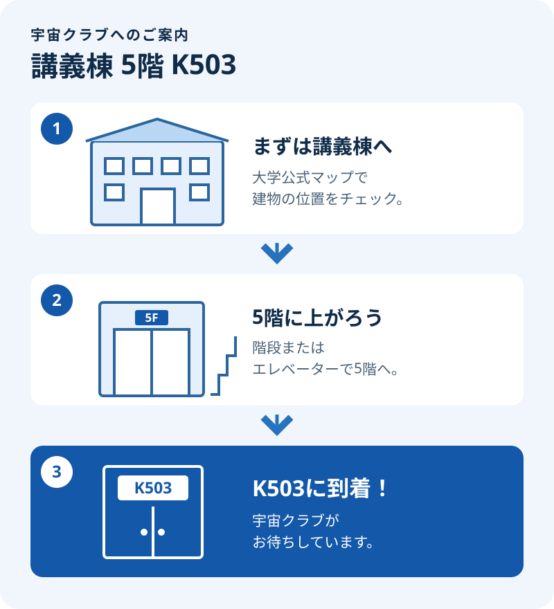

理大祭2026 / 会場のご案内
会場は、講義棟5階 K503。
東京理科大学 野田キャンパス。教室前の宇宙クラブの案内を目印に。
講義棟に着いたら5階へ
階段またはエレベーターで5階に上がり、K503教室へお越しください。操縦体験・展示・ドローンショーは、こちらの教室でご案内します。
講義棟の位置を公式マップで確認 ↗駅から大学までの経路は、理大祭公式のアクセス案内 ↗をご覧ください。

理大祭2026 / 会場のご案内
東京理科大学 野田キャンパス。教室前の宇宙クラブの案内を目印に。
階段またはエレベーターで5階に上がり、K503教室へお越しください。操縦体験・展示・ドローンショーは、こちらの教室でご案内します。
講義棟の位置を公式マップで確認 ↗駅から大学までの経路は、理大祭公式のアクセス案内 ↗をご覧ください。
